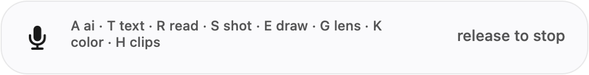
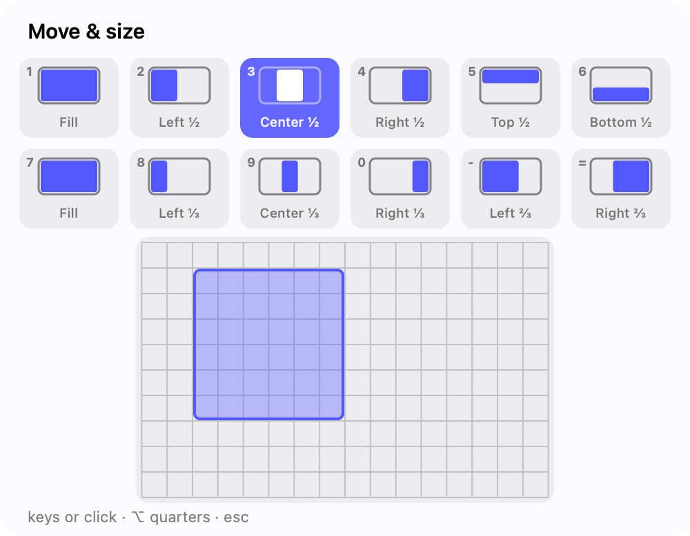
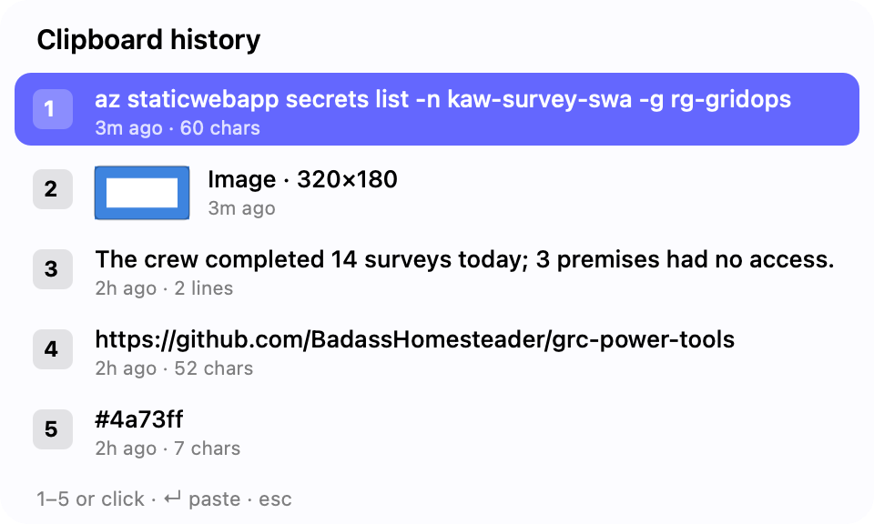
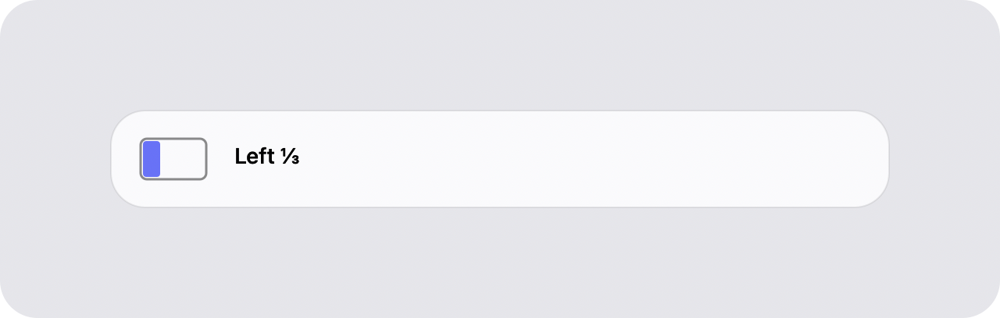
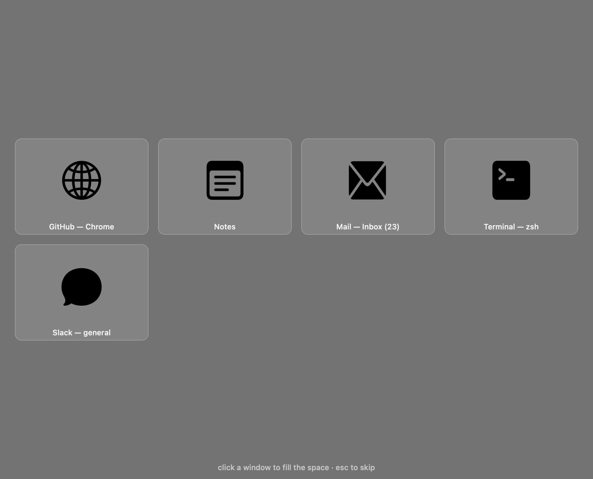
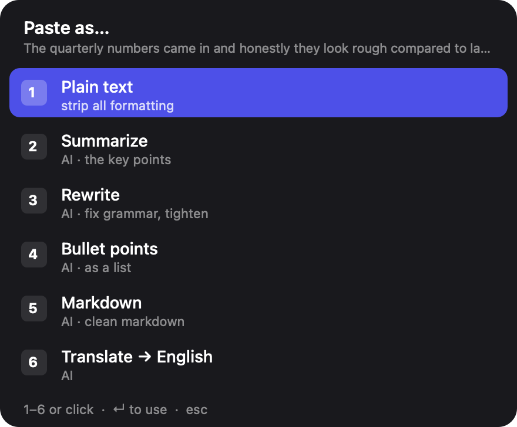
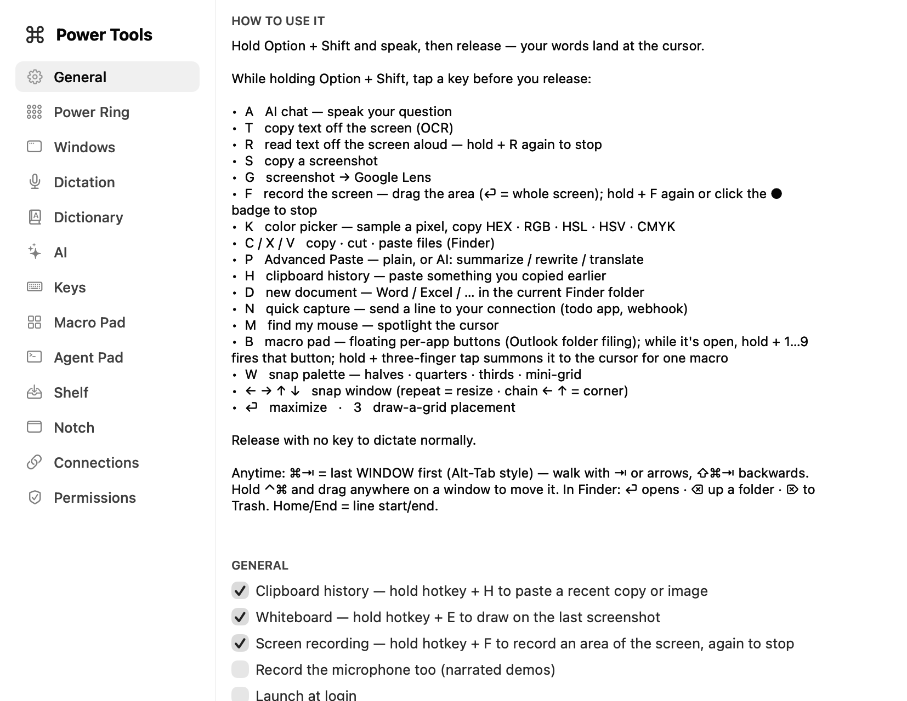

Dictation, AI chat, window snapping with a Moom-style palette, Win+V-style clipboard history, a real Alt-Tab, OCR and more — the PowerToys of macOS, running entirely on your Mac.

Hold Option + Shift and talk — release, and polished text lands in whatever app has focus.
01 — Everything behind one key
Hold, speak, release. On-device transcription with LLM cleanup — no cloud.
hold + A then speak — opens a streaming Claude chat with your message.
hold + ←→↑↓ to snap; repeat to cycle sizes, chain ← ↑ for a corner. Plus Snap Assist.
hold + W — Fill, halves, quarters, thirds and a mini-grid, drawn as mini window diagrams with live preview.
Like Windows Alt-Tab: hold ⌘ for a strip of live window thumbnails — ⇥ or arrows move, release to switch. Every window is an entry, not every app.
hold + H — your recent copies, text and images with thumbnails. Pick one, it pastes and becomes the clipboard.
hold + 3 and drag across a grid to place a window, Moom-style.
hold + P to paste as plain text — or summarize, rewrite, bullets, translate.
hold + T and drag a region — recognized text and tables to your clipboard.
hold + C / X / V to copy, cut and move files in Finder — and ⏎ opens the selection instead of renaming, Windows-style.
hold + S to grab a region; hold + G for Google Lens.
hold + M dims the screen and spotlights your cursor.
hold + N — type or dictate a line, it POSTs to your endpoint (todo app, n8n webhook). Inline p1 · tomorrow · @context become fields.
Snapshot every window’s position; restore from the palette or Settings — meeting mode in one keystroke.
Speakers auto-mute while you hold the key and restore on release — the meeting never lands in your transcript.
02 — A look inside






03 — Local by default
Speech recognition is Apple's on-device SpeechAnalyzer. Cleanup is Apple's on-device model. History lives in a local SQLite file.
Everything cloud is opt-in and runs on your own API key — AI chat, Claude/OpenAI dictation cleanup, and Advanced Paste's smart transforms — and nothing is sent until you use them. Little-Snitch-clean by design.
04 — Install in a minute
Grab the .dmg, drag Power Tools into Applications, and open it. Signed & notarized — it just opens.
Allow Microphone and Accessibility when prompted — needed for the hotkey and dictation.
Hold Option + Shift and speak, or tap a letter/arrow for any of the tools.